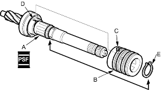
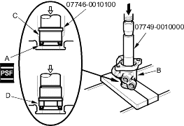
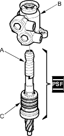
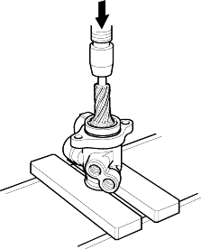

- Apply power steering fluid to the surface of the pinion shaft (A). Slide the sleeve (B) onto the pinion shaft by aligning the locating pin (C) on the inside of the sleeve with the cutout (D) in the shaft. Then install the new snap ring (E) securely in the pinion shaft groove. Be careful not to damage the valve seal ring when inserting the sleeve.

- Apply power steering fluid to the seal ring lip of the new valve oil seal (A), then install the seal in the valve housing (B) using a hydraulic press and special tools. Install the seal with its grooved side (C) facing the tool.

- Press the bushing (D) into the valve housing with a hydraulic press and special tool.
- Apply vinyl tape (A) to the pinion shaft, then coat the vinyl tape with power steering fluid.

- Insert the pinion shaft into the valve housing (B). Be careful not to damage the valve seal rings (C).
- Remove the vinyl tape from the pinion shaft, then remove any residue from the tape adhesive.
- Press the pinion shaft/sleeve into the valve housing with a hydraulic press. Check that the pinion shaft/sleeve turns smoothly by hand after installing it.
